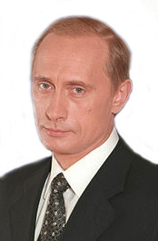
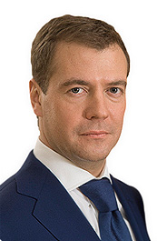
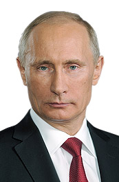

Росси́я, другое официальное название — Росси́йская Федера́ция (РФ), — государство в Восточной Европе и Северной Азии. Территория России в её конституционных границах составляет 17 125 191 км2; население страны (в пределах её заявленной территории) составляет 146 748 590 чел. (на 2020). Занимает первое место в мире по территории, шестое — по объёму ВВП и девятое — по численности населения.
Столица — Москва. Государственный язык — русский.
Государственный строй — президентско-парламентская республика с федеративным устройством. С 31.12.1999 года (с перерывом в 2008—2012 годах когда Дмитрий Медведев был президентом) должность президента Российской Федерации занимает Владимир Владимирович Путин. C 16.01.2020 года должность председателя Правительства РФ занимает Михаил Мишустин.
В состав нашей страны входят 85 субъектов, 46 из которых именуются областями, 22 — республиками, 9 — краями, 3 — городами федерального значения, 4 — автономными округами и 1 — автономной областью. Всего в стране около 157 тысяч населённых пунктов.
Наша страна имеет 25 границ (18 сухопутных и 7 морских).
Россия — многонациональное государство с широким этнокультурным многообразием. Бо́льшая часть населения (около 75 %) относит себя к православию, что делает Россию страной с самым многочисленным православным населением в мире.
Наша страна — ядерная держава; одна из ведущих промышленных и космических держав мира; занимает 2-е место в рейтинге самых влиятельных стран мира (2020). Русский язык — язык мирового значения, один из шести официальных и рабочих языков ООН, ЮНЕСКО и других международных организаций.
Государственное устройство
Государственная символика
Флаг России представляет собой прямоугольное полотнище из трёх равновеликих горизонтальных полос: верхней — белого, средней — синего и нижней — красного цвета. Отношение ширины флага к его длине составляет 2:3.
Герб России представляет собой четырёхугольный, с закруглёнными нижними углами, заострённый в оконечности красный геральдический щит. Внутри него расположен золотой двуглавый орёл с поднятыми и расправленными крыльями. Орёл увенчан двумя малыми коронами и — над ними — одной большой короной, соединёнными лентой. В правой лапе орла — скипетр, в левой — держава. На груди орла, в красном щите, — серебряный всадник в синем плаще на серебряном коне, поражающий серебряным копьём чёрного, опрокинутого навзничь и попранного конём дракона.
Основы государственного строя
Россия — демократическое федеративное правовое государство с республиканской формой правления.
Россия является федерацией. Основным законом государства является Конституция, принятая в 1993 году. В настоящее время Конституция России действует с рядом поправок, основные из которых были приняты в 2008 году. Данные поправки, увеличившие срок полномочий президента Российской Федерации с 4 до 6 лет, а Государственной думы с 4 до 5 лет, получили значительный международный резонанс. В основе государственного строя России, согласно Конституции, находятся следующие базовые принципы: народовластие, федерализм, социальное государство, разделение властей, светское государство, приоритет прав и свобод человека, местное самоуправление, многопартийность, идеологическое и политическое многообразие, верховенство права, многообразие форм собственности, форма правления и государственного устройства, государственный суверенитет. По мнению исследователей, публично-правовая ответственность носителей публичной власти должна иметь субсидиарный характер и её основы должны быть закреплены в Конституции РФ; необходима детальная проработка и совершенствование правового механизма защиты основ конституционного строя Российской Федерации.
Федеративное устройство
Россия — государство с федеративным устройством. В составе Российской Федерации 85 равноправных субъектов федерации, в том числе 22 республики, 9 краёв, 46 областей, 3 города федерального значения, 1 автономная область, 4 автономных округа и 1 федеральная территория.
Система органов государственной власти субъектов федерации определяется общими принципами, устанавливаемыми федерацией. В каждом регионе имеется законодательный (представительный) орган (законодательное собрание, дума) и исполнительный орган (правительство). Во всех субъектах существует должность высшего должностного лица (глава, губернатор), которые избираются на срок не более 5 лет и не могут замещать указанную должность более двух сроков подряд.
Российская Федерация также подразделяется на 8 федеральных округов, в каждом из которых работает полномочный представитель президента РФ.
Субъекты федерации имеют своё административно-территориальное деление. Как правило, основными административно-территориальными единицами в составе субъекта федерации являются районы и города областного (республиканского, краевого, окружного) значения.
Президент
Главой государства является Президент Российской Федерации, в настоящее время — Владимир Владимирович Путин. В исполнении обязанностей главы государства Президенту оказывает содействие председатель Правительства России, в настоящее время им является Михаил Владимирович Мишустин. Председатель Правительства РФ занимает пост президента в случае смерти или отставки последнего.
Президент избирается сроком на шесть лет тайным голосованием на всеобщих прямых выборах, один и тот же человек не может занимать президентский пост более двух сроков подряд. Конституционные нормы, предусматривающие шестилетний срок полномочий президента, введены в 2008 году, ранее глава государства избирался раз в четыре года.
Президент обладает рядом важнейших полномочий: руководит внешней политикой, является Верховным главнокомандующим Вооружёнными силами, назначает с согласия Государственной думы председателя Правительства, принимает решение об отставке правительства. По предложению председателя Правительства назначает на должности заместителей председателя Правительства и федеральных министров, а также освобождает их от должности. Президент возглавляет Совет безопасности, назначает и освобождает от должности командование Вооружёнными силами. Обладает правом предлагать на рассмотрение Государственной думы кандидатуры на должность председателя Центрального банка (не входящего в состав Правительства). В случае агрессии или непосредственной угрозы агрессии Президент имеет право объявить военное положение на всей территории страны или на отдельных территориях, но при этом обязан незамедлительно известить о своём решении Федеральное собрание. Обладает правом издания указов, обязательных для исполнения на всей территории России (указы не должны противоречить федеральным законам). Обладает также целым рядом других полномочий.
Президент может быть отрешён от должности Советом Федерации при условии выдвижения Государственной думой обвинения в государственной измене или совершения иного тяжкого преступления и наличия положительных заключений Верховного и Конституционного судов.
Список президентов РФ
| № | Срок | Фото | Фамилия Имя Отчество (Год жизни) | Срок полномочий | Срок в годах и месяцах | |
|---|---|---|---|---|---|---|
| 1 | 1 |

|
Борис Николаевич Ельцин (1931—2007) |
10 июля 1991 | 9 августа 1996 | 4 года 7 месяцев 9 дней |
| 2 | 9 августа 1996 | 31 декабря 1999 | 3 года 4 месяца 22 дня | |||
| 2 | 1 |  | Владимир Владимирович Путин (р. 1952) |
7 мая 2000 | 7 мая 2004 | 4 года |
| 2 | 7 мая 2004 | 7 мая 2008 | 4 года | |||
| 3 | 1 |  | Дмитрий Анатольевич Медведев (р. 1965) |
7 мая 2008 | 7 мая 2012 | 4 года |
| 4 | 3 |  | Владимир Владимирович Путин (р. 1952) |
7 мая 2012 | 7 мая 2018 | 6 лет |
| 4 | 7 мая 2018 | срок истекает 7 мая 2024 | 6 лет | |||